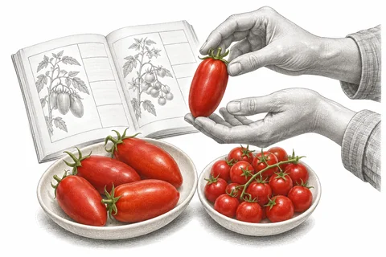
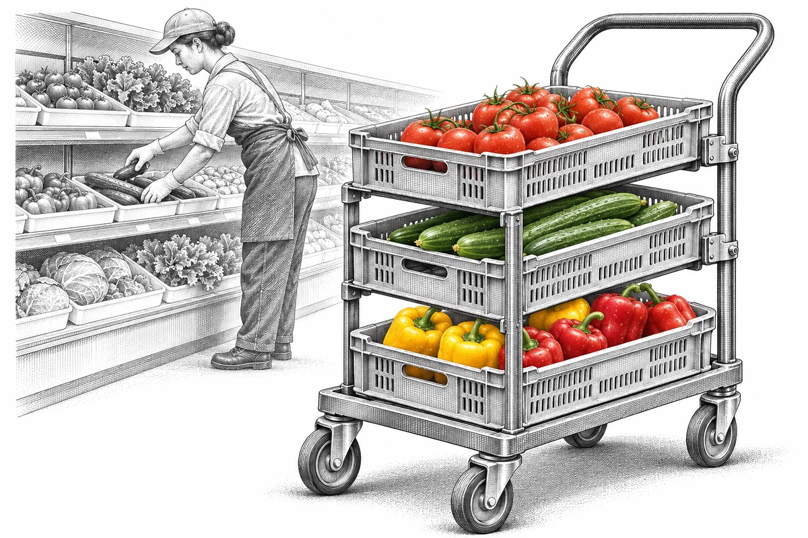
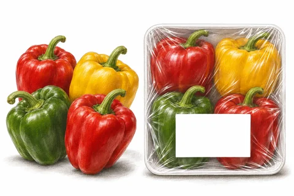
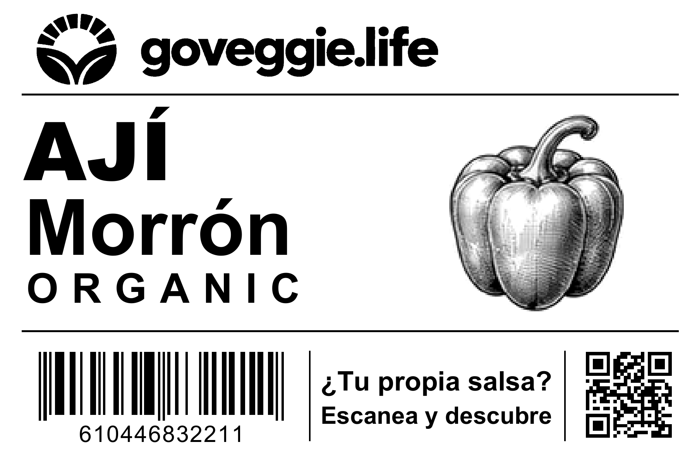
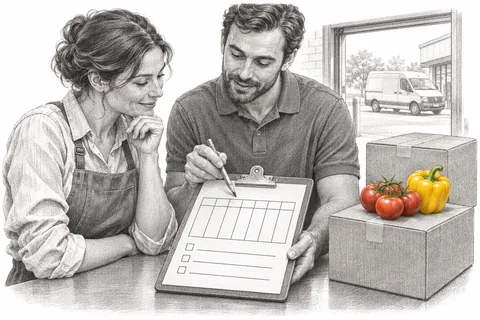
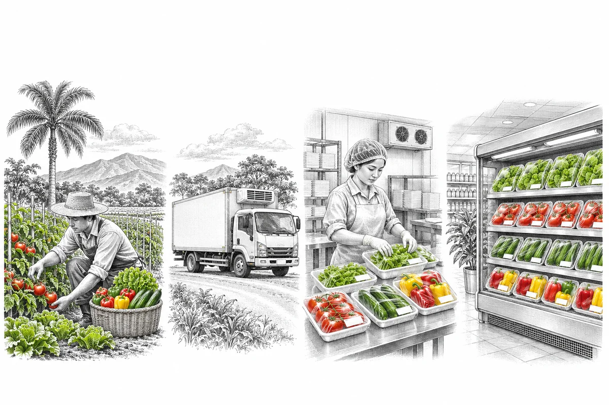

El surtido de tu tienda
¿Tomate Barceló para salsa o cherry para ensalada? Elige las variedades que buscan tus clientes en el catálogo.
Seleccionamos y empacamos los productos para tu góndola. Acordamos contigo el lugar, el volumen y la frecuencia de entrega.


¿Tomate Barceló para salsa o cherry para ensalada? Elige las variedades que buscan tus clientes en el catálogo.


El ají Morrón se puede exhibir suelto o en bandeja. Indícanos cómo lo vendes y consulta las presentaciones disponibles para cada producto.
Ver etiqueta original ↗
¿Dónde recibes y cuántas cajas necesitas por semana? Con esos dos datos acordamos la frecuencia de entrega y las cantidades por sucursal.
Déjanos tus datos y te contactamos con el catálogo y condiciones comerciales.
¿Qué necesitas para tu próxima entrega? Cuéntanos qué productos buscas, para cuántas tiendas y cuándo te gustaría recibirlos.

Tu góndola es solo el comienzo.